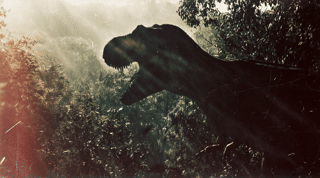

Intelligence Artificielle × Image
Réalisons
vos idées
ensemble.
Morphings, portraits vivants, scènes impossibles — l'IA comme outil de création visuelle au service de votre projet audiovisuel.
Parlons de votre projet


